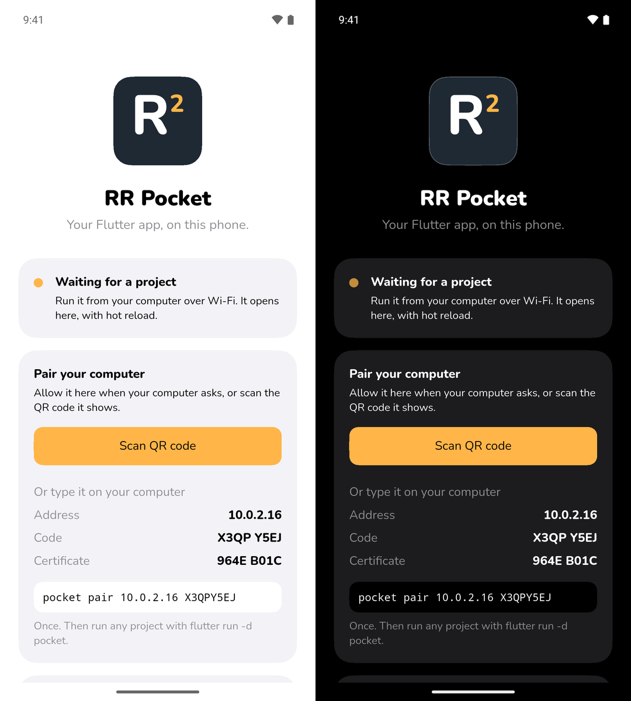

Your Flutter app, on your phone, over Wi-Fi.
RR Pocket runs the Flutter project you're working on, on your Android phone, straight from your computer. No Android SDK, no Gradle build, no adb: just the Flutter SDK you already have. Like Expo Go, for Flutter.
Android 7.0 or later. No ads, no account.

Three steps, then just r
Pair once. After that, every Flutter project runs on the phone with a stock
flutter run.
-
Open RR Pocket
Install it from Google Play and open it. It shows the phone's address, a pairing code and the Flutter version it carries.
-
Pair your computer
dart pub global activate rr_pocket pocket pair
It finds the phone on your Wi-Fi; tap Allow on the phone. Or scan the QR code it shows.
-
Run any project
pocket pin flutter run -d pocket
Your app opens inside RR Pocket.
rhot reloads,Rhot restarts,qquits.
A real device, without the Android toolchain
RR Pocket carries Flutter's debug engine, so the phone behaves like any
device flutter run knows.
Hot reload in under a second
Change your code and press r: about half a second on a Pixel 7.
Your usual tools
DevTools, breakpoints and your print output work as on any other
device.
No Android SDK
No Gradle build, no adb, no USB cable. The pocket command needs only
the Dart SDK, on macOS, Linux and Windows.
Errors you can see
If your app fails as it starts, RR Pocket shows the error instead of a frozen screen.
Encrypted and paired
Everything between your computer and the phone goes over TLS, pinned to the phone you paired. RR Pocket collects nothing.
Built into Lumide
The same package is a Lumide plugin: pair from the status bar, then pick RR Pocket in the device list.
29 plugins built in
Your app can use these as they are. pocket pin matches your
project's versions to the ones RR Pocket carries. Plain Dart packages, Hive CE among them,
need nothing.
- camera
- geolocator
- flutter_local_notifications
- local_auth
- image_picker
- file_picker
- url_launcher
- share_plus
- shared_preferences
- path_provider
- sqflite
- isar_community
- flutter_secure_storage
- video_player
- just_audio
- audio_session
- record
- webview_flutter
- permission_handler
- connectivity_plus
- device_info_plus
- package_info_plus
- battery_plus
- sensors_plus
- vibration
- wakelock_plus
- in_app_review
- qr_code_scanner_plus
- gms_check
Why "RR"?
Raccoon Runtime, the Flutter runtime underneath. And r and
R: the keys that hot reload and hot restart your app.